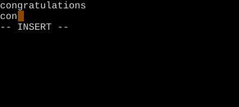
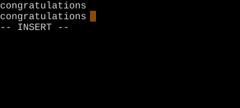

Word Completion (Ctrl-N / Ctrl-P)
Vim has had autocomplete since 1996.
Ctrl-N and Ctrl-P trigger keyword completion from the current and other buffers. Once a menu is up, Ctrl-N/Ctrl-P walk the suggestions; Ctrl-E cancels; Ctrl-Y accepts.
Word Completion
Type a partial word, then Ctrl-N (next) or Ctrl-P (previous) to autocomplete from words already in scope. Vim has had this since the mid-90s — long before IDE autocomplete was standard.
| Key | Note |
|---|---|
| tex | Start typing… |
| Ctrl-N | Pop the completion menu |
| Ctrl-N | Cycle forward through matches |
| Ctrl-P | Cycle back |
| Ctrl-Y | Accept the highlighted match |
| Ctrl-E | Cancel — keep what you typed |
Worked example — Ctrl-N
Word completion from buffer.


Ctrl-N searches forward through known words; Ctrl-P backward. Ctrl-X opens the sub-completion menu (filenames, lines, etc.).
Watch
- 📺 #0384 Ctrl-G U Don't Break Undo (not yet published)
- 📺 #0388 Ctrl-X Ctrl-K Dictionary Complete (not yet published)
See also: The Ctrl-X Sub-Completions